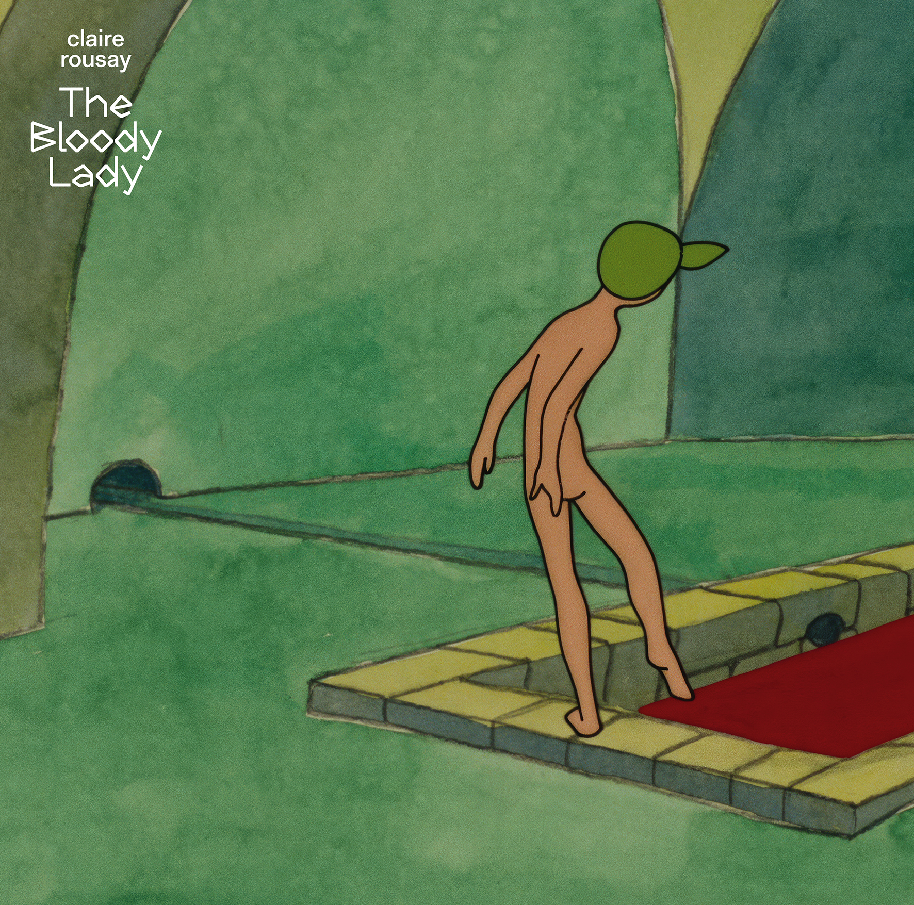

Claire Rousay - The Bloody Lady



Información del álbum facilitada por discogs.com:
Fecha de lanzamiento: 2024
Géneros: Electronic, Stage & Screen
Estilos: Drone, Soundtrack
Pais: Belgium
Votos: Media de 4.67 con 3 votos
Sello: VIERNULVIER Records
Artwork - Viktor Kubal
Composed By, Performer, Recorded By - Claire Rousay
Design - Jeroen Wille
Liner Notes - Rastislav Steranka
Liner Notes - Wouter Vanhaelemeesch
Mastered By - Stephan Mathieu
Photography By - Emily Harper Scott
Tracklist:
A1. I
A2. II
A3. III
A4. IV
A5. V
B1. VI
B2. VII
B3. VIII
B4. IX
B5. X
B6. XI